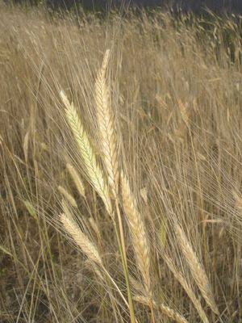

Petit épeautre
du Pays de Sault


⟹ Produits du Terroir ⟸
Le petit épeautre, ou engrain (Triticum monococcum), appartient aux plus anciennes céréales domestiquées par l’être humain. Il ne faut pas le confondre avec le grand épeautre (Triticum spelta) : il s’agit d’une espèce distincte, diploïde, dont la domestication s’inscrit dans la révolution néolithique commencée il y a environ 10 000 ans dans le Croissant fertile du Proche-Orient. De là, les premières agricultures céréalières se diffusent progressivement vers l’Europe.

L’engrain est un blé « vêtu » : après le battage, le grain reste étroitement enfermé dans ses enveloppes et doit être décortiqué avant d’être consommé ou moulu. Cette particularité augmente le travail après récolte, mais protège aussi le grain. Son épi fin, sa paille et son cycle cultural diffèrent des blés tendres modernes sélectionnés pour leur productivité et leur facilité de transformation.
Dans les régions de montagne et les terroirs pauvres, les céréales rustiques ont longtemps gardé un intérêt particulier. Le Pays de Sault, haut plateau pyrénéen de l’Aude autour de Belcaire, Espezel et Camurac, est marqué par l’altitude, des hivers froids et une agriculture adaptée à des conditions plus rudes que celles de la plaine languedocienne. Dans ce contexte, des céréales capables de valoriser des sols modestes ont historiquement complété l’élevage et les cultures vivrières.
Il convient toutefois de distinguer l’histoire générale, très ancienne et bien documentée, de Triticum monococcum de l’histoire locale précise de sa culture dans le Pays de Sault, pour laquelle les sources facilement accessibles sont plus rares. Présenter le petit épeautre comme cultivé sans interruption sur le plateau depuis la Préhistoire serait donc excessif. Ce que l’on peut affirmer, c’est que l’engrain appartient au patrimoine des céréales anciennes aujourd’hui remises en culture dans plusieurs terroirs français, notamment dans des systèmes agricoles recherchant rusticité, diversité et transformation locale.
Le recul de l’engrain s’explique par l’essor de blés plus productifs et plus faciles à battre, moudre et panifier. Avec la modernisation agricole des XIXe et surtout XXe siècles, de nombreuses céréales minoritaires ont été marginalisées au profit d’un petit nombre d’espèces et de variétés à haut rendement. Le petit épeautre a ainsi survécu dans des niches de production avant de connaître un regain d’intérêt à la fin du XXe et au XXIe siècle.
Cette redécouverte tient à plusieurs facteurs : intérêt pour les céréales anciennes, agriculture biologique, recherche de goûts plus typés, circuits courts et diversification des fermes. Le grain entier se cuisine en soupes, salades, risottos ou accompagnements ; concassé, il devient semoule ; moulu, il entre dans des pains, biscuits et pâtisseries. Son goût est souvent décrit comme doux et légèrement noisetté.
Dans le Pays de Sault, sa culture contemporaine prend ainsi un sens qui dépasse la seule production céréalière : elle participe à la diversification d’une agriculture de montagne et à la remise en valeur de plantes rustiques adaptées à des terroirs exigeants. Le petit épeautre relie symboliquement les premières agricultures du Néolithique aux démarches actuelles de conservation de la diversité cultivée, tout en retrouvant une place dans la cuisine locale.
Salade froide d'épeautre : version estivale, avec tomates, herbes fraîches et huile d'olive.
Galettes de petit épeautre : à base de farine d'épeautre, cuites à la poêle comme les farçous.
« Épeotto » : déclinaison façon risotto, cuit lentement au bouillon et au fromage de brebis.
Le petit épeautre du Pays de Sault se retrouve avant tout dans la cuisine familiale du plateau, mais aussi sur les tables des auberges de la Haute vallée de l'Aude.
Marchés de Quillan et de Belcaire où l'on trouve grain, farine et semoule vendus par les producteurs locaux.
Fermes du Pays de Sault qui proposent la vente directe de leur récolte.
Restaurants de la Haute vallée de l'Aude qui l'inscrivent à leur carte en soupe ou en accompagnement.